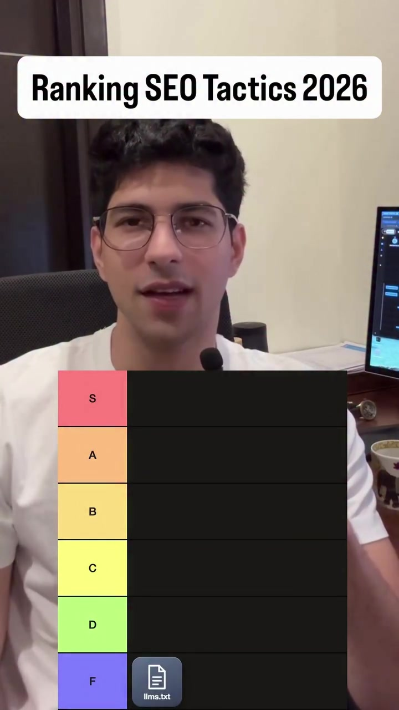
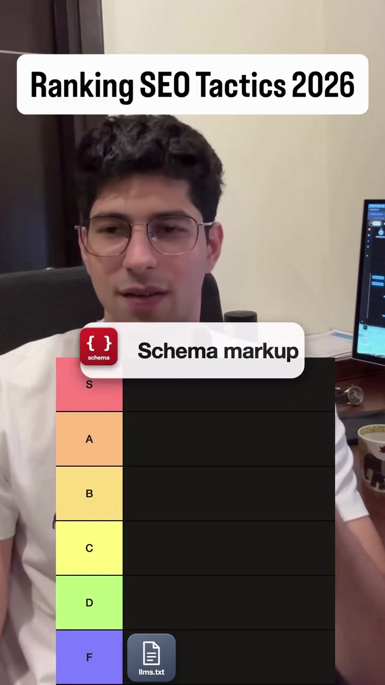
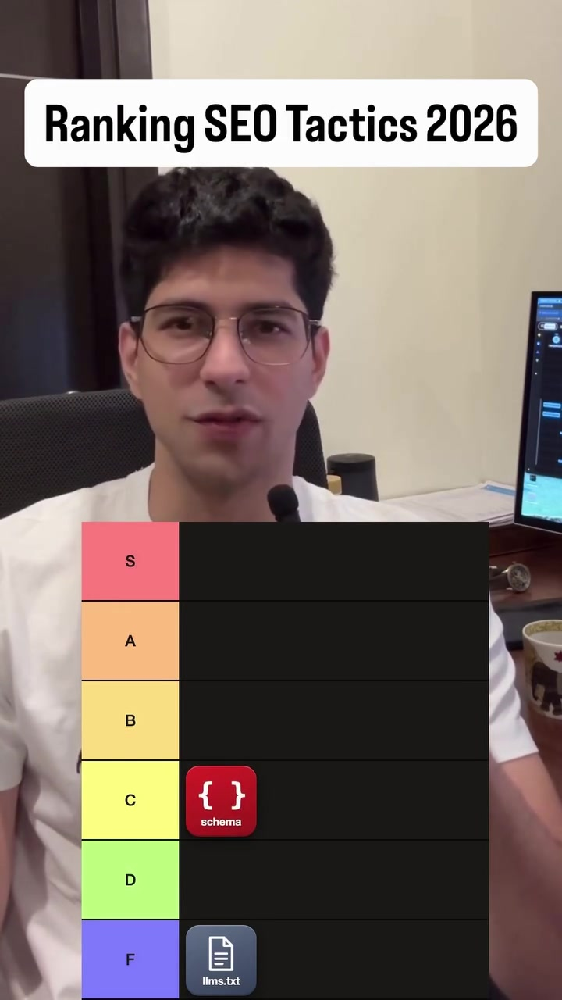

Marketing · SEO
GEO (Generative Engine Optimization): The 8-Tactic Tier List for AI Search Citations
As search queries migrate from traditional Google blue links to ChatGPT Search, Perplexity, and Claude, conventional SEO playbooks are failing. AI engines do not calculate PageRank or count backlinks in the same manner. This empirical tier list breaks down the 8 tactics that actually drive citations inside large language models versus over-hyped industry distractions.
Visual Reference Stills



The GEO Tier List Breakdown
1. Unrestricted AI Crawler Access: Whitelist GPTBot, ClaudeBot, and PerplexityBot in robots.txt without aggressive Cloudflare challenge blocks.
2. Comparison & "Alternative To" Pages: LLMs love structured comparative tables (e.g. "Tool A vs Tool B"). Publishing objective feature matrix pages leads to direct quotation.
3. Unlinked Web Brand Mentions: LLM pre-training and RAG web retrieval weigh consensus co-occurrence across forums, Reddit, and blogs far more than exact-match anchor backlinks.
4. Fresh Content Velocity: Recency bias is strong in AI search models. Updating pages with recent timestamps (dateModified) increases citation likelihood ~3x.
5. Verified 3rd-Party Review Profiles: Strong presence on G2, Trustpilot, Product Hunt, and Reddit where models verify social proof.
6. Schema Markup (JSON-LD): Helpful for traditional Google rich snippets, but modern LLMs parse raw HTML semantic tags and markdown with comparable accuracy.
7. Domain Authority (DA / DR): Legacy metric. AI search agents frequently cite small indie blogs or niche forum threads if they provide the clearest, most direct answer to the query.
8. llms.txt: Over 97% of production web crawlers and commercial LLM search agents currently ignore /llms.txt entirely. Do not waste engineering hours maintaining separate text mirrors.